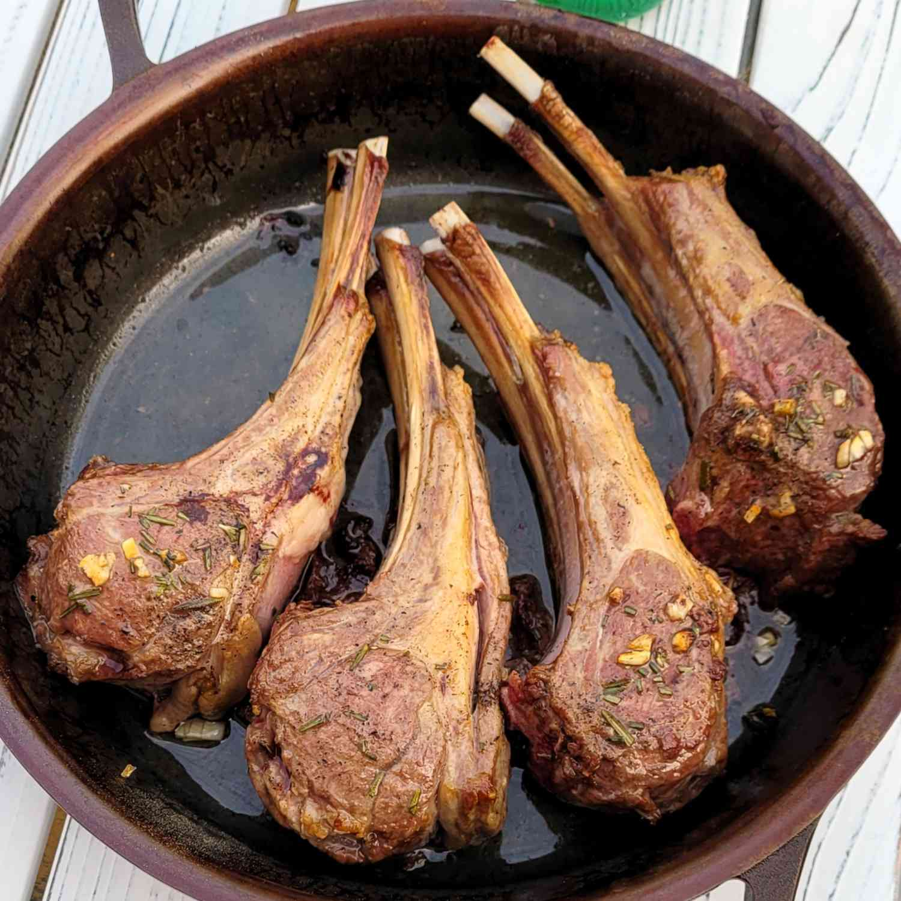

Lamb Chops

Description:
These lamb chops are easy to cook in the oven and are ready to serve in under 30 minutes!
Ingredients:
- 4 lamb chops (~4 oz. each)
- 1 tablespoon olive oil
- 1 clove garlic, minced
- 1/2 tablespoon crushed fresh rosemary leaves
- sea salt and freshly ground black pepper to taste
- 1/4 cup mint jelly
Steps:
- Preheat the oven to 425°F (220° C).
- Cut away excess fat from lamb chops. Coat each chop lightly in olive oil. Season lamb chops with garlic, rosemary, salt, and pepper. Place lamb chops in a cast iron skillet.
- Bake uncovered in the preheated oven until cooked through, 8 to 10 minutes.
- Remove from over and cover tightly with foil; let rest for 8 to 10 minutes. Serve with mint jelly on the side.